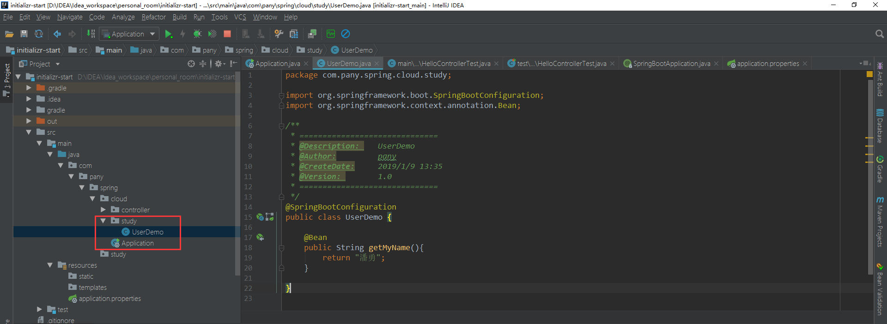
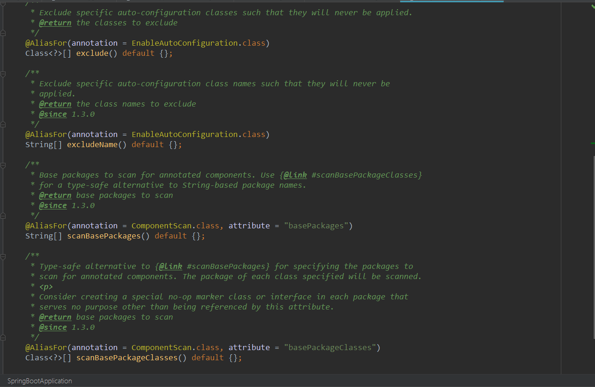
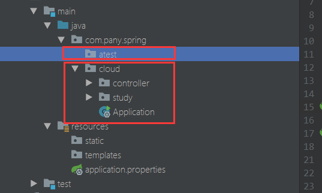
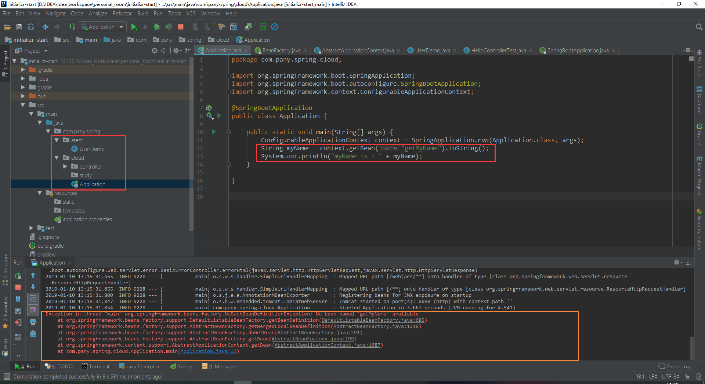
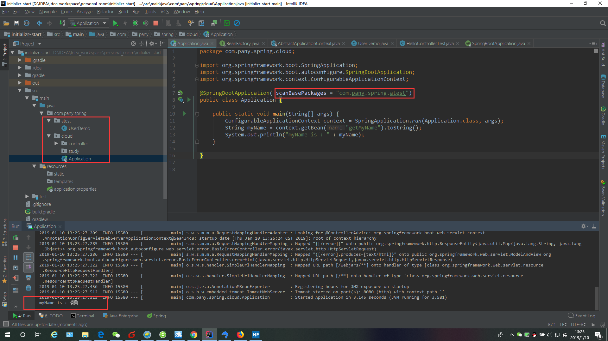
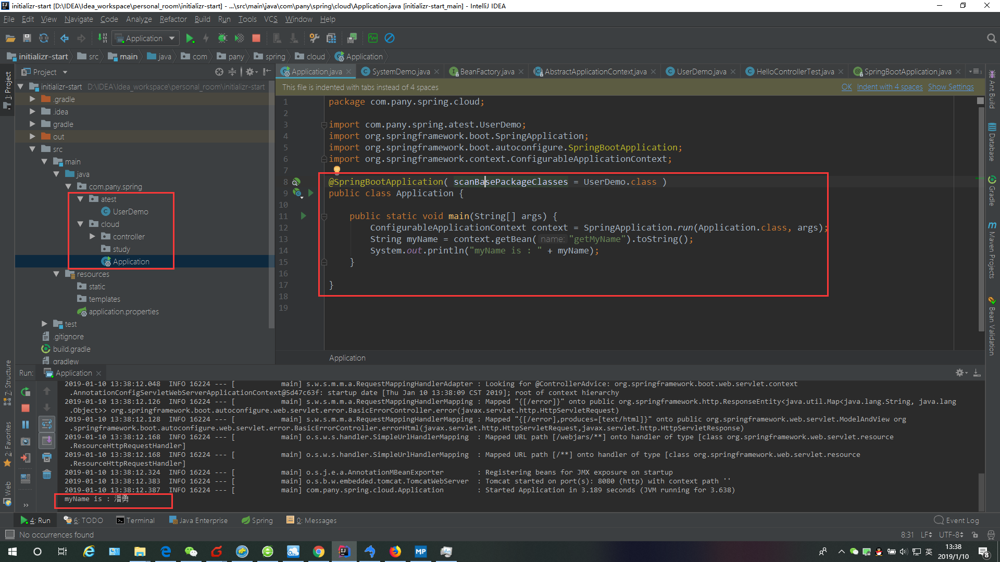
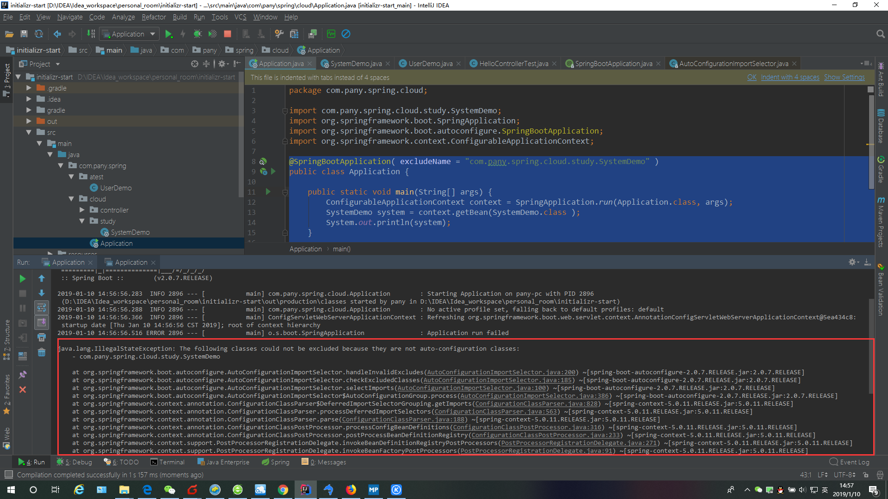
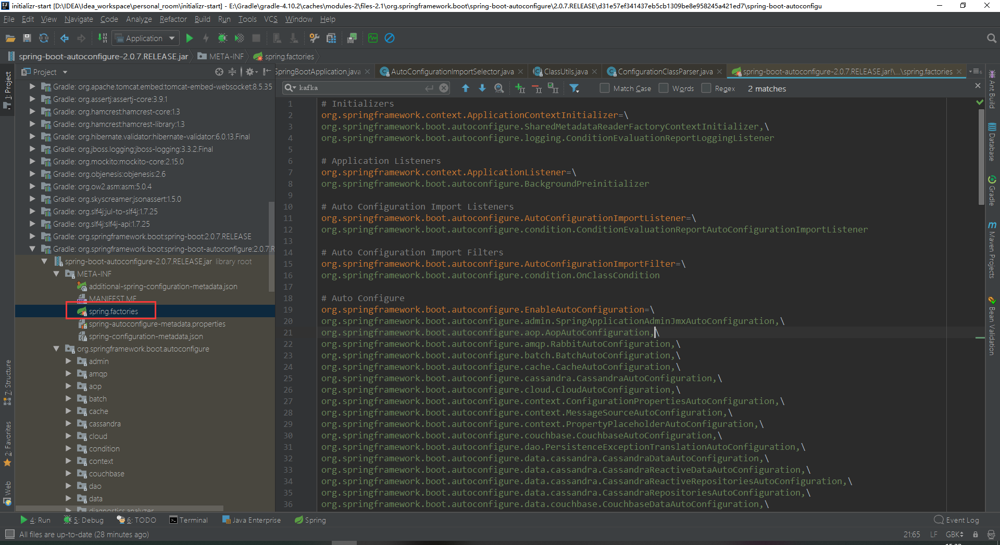
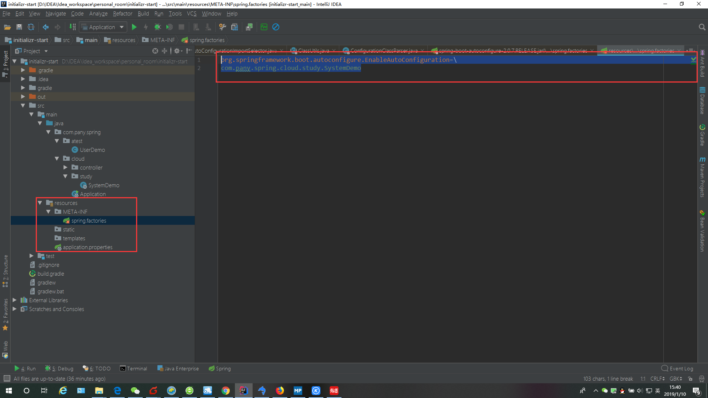
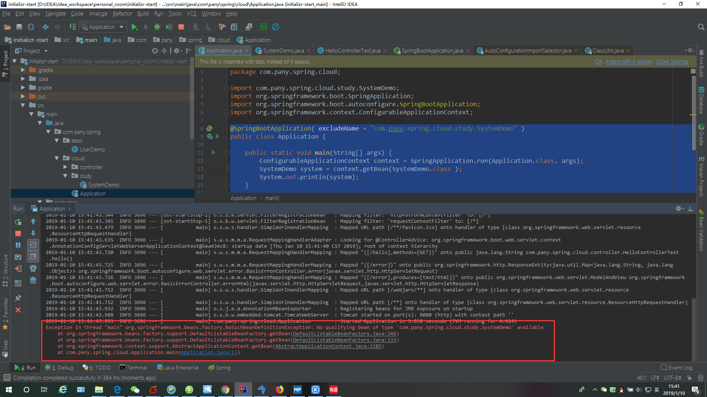

Springboot之@SpringBootApplication讲解
作者：潘勇
时间：1/4/2019 3:50:31 PM
@SpringBootApplication 注解位于我们的启动程序上，正是因为这个注解，我们才能通过运行启动入口的main方法来启动项目；
现在我们来了解这个注解。
@SpringBootApplication 其实是一个复合注解，包括@ComponentScan，和@SpringBootConfiguration，@EnableAutoConfiguration
这三个关键的注解，我们先来认识下这三个注解的主要是干嘛的？
@ComponentScan ： 相当于以前springMVC + Spring + mybatis 中的配置文件中的<context:component-scan base-package="包名"/>，
配置了这个就可以自动扫描我们指定包及其子包下的@Component，@Controller，@Service，@Repository 注解，被这些注解标记的类
会被纳入到Spring容器中进行管理。
注：我们的启动类上添上了@SpringBootApplication，启动类相同级别包下的和其子包下的类都会被注解扫描，但是如果在这以外的包想要被
Spring容器管理也可以，但是需要增加配置，具体操作下面会介绍。
@SpringBootConfiguration ： 继承自Configuration，二者功能也一样，被标注的类就是配置类，该类中被@Bean 标记的方法将会被纳入Spring
容器中管理，并且实例名就是方法名；可以参考下面的例子1.1.1；
@EnableAutoConfiguration ： 具体作用是启动自动配置，会将应用中所有符合条件的@Configuration 配置都加载到当前的
SpringBoot 创建并使用的IOC容器中，具体的例子我后面会有专门的帖子来做介绍。

此例子主要演示@SpringBootConfiguration 功能：
参开下图，在创建一个启动类同级的包 study ，包下创建一个类 UserDemo，代码如下：
这个类被@SpringBootConfiguration 标注，说明是配置类，里面的方法 getMyName 被@Bean 标注，按照我上面的介绍，这个方法将会
被Spring容器管理，实例名是getMyName。在启动容器之后我们可以通过ConfigurableApplicationContext获取到，代码如下。
// 创建配置类
package com.pany.spring.cloud.study;
import org.springframework.boot.SpringBootConfiguration;
import org.springframework.context.annotation.Bean;
@SpringBootConfiguration
public class UserDemo {
@Bean
public String getMyName(){
return "潘勇";
}
}
// 直接从启动方法里获取Bean
package com.pany.spring.cloud;
import org.springframework.boot.SpringApplication;
import org.springframework.boot.autoconfigure.SpringBootApplication;
import org.springframework.context.ConfigurableApplicationContext;
@SpringBootApplication
public class Application {
public static void main(String[] args) {
ConfigurableApplicationContext context = SpringApplication.run(Application.class, args);
String myName = context.getBean("getMyName").toString();
System.out.println("myName is : " + myName);
}
}
// 运行main方法看结果
2019-01-09 13:37:33.871 INFO 48472 --- [ main] s.w.s.m.m.a.RequestMappingHandlerMapping : Mapped "{[/error],produces=[text/html]}" onto public org.springframework.web.servlet.ModelAndView org.springframework.boot.autoconfigure.web.servlet.error.BasicErrorController.errorHtml(javax.servlet.http.HttpServletRequest,javax.servlet.http.HttpServletResponse)
2019-01-09 13:37:33.901 INFO 48472 --- [ main] o.s.w.s.handler.SimpleUrlHandlerMapping : Mapped URL path [/webjars/**] onto handler of type [class org.springframework.web.servlet.resource.ResourceHttpRequestHandler]
2019-01-09 13:37:33.901 INFO 48472 --- [ main] o.s.w.s.handler.SimpleUrlHandlerMapping : Mapped URL path [/**] onto handler of type [class org.springframework.web.servlet.resource.ResourceHttpRequestHandler]
2019-01-09 13:37:34.048 INFO 48472 --- [ main] o.s.j.e.a.AnnotationMBeanExporter : Registering beans for JMX exposure on startup
2019-01-09 13:37:34.103 INFO 48472 --- [ main] o.s.b.w.embedded.tomcat.TomcatWebServer : Tomcat started on port(s): 8080 (http) with context path ''
2019-01-09 13:37:34.114 INFO 48472 --- [ main] com.pany.spring.cloud.Application : Started Application in 4.423 seconds (JVM running for 5.542)
myName is : 潘勇

SpringBootApplication 注解中还有四个方法，如下：
1、根据class来排除,排除特定的自动配置的类加入spring容器，传入参数value类型是class类型。
/**
* Exclude specific auto-configuration classes such that they will never be applied.
* @return the classes to exclude
*/
@AliasFor(annotation = EnableAutoConfiguration.class)
Class<?>[] exclude() default {};
2、根据class name来排除,排除特定的自动配置的类加入spring容器，传入参数value类型是class的全类名字符串数组。
/**
* Exclude specific auto-configuration class names such that they will never be
* applied.
* @return the class names to exclude
* @since 1.3.0
*/
@AliasFor(annotation = EnableAutoConfiguration.class)
String[] excludeName() default {};
3、指定扫描包，参数是包名的字符串数组。
/**
* Base packages to scan for annotated components. Use {@link #scanBasePackageClasses}
* for a type-safe alternative to String-based package names.
* @return base packages to scan
* @since 1.3.0
*/
@AliasFor(annotation = ComponentScan.class, attribute = "basePackages")
String[] scanBasePackages() default {};
4、扫描特定的包，参数类似是Class类型数组。
/**
* Type-safe alternative to {@link #scanBasePackages} for specifying the packages to
* scan for annotated components. The package of each class specified will be scanned.
* <p>
* Consider creating a special no-op marker class or interface in each package that
* serves no purpose other than being referenced by this attribute.
* @return base packages to scan
* @since 1.3.0
*/
@AliasFor(annotation = ComponentScan.class, attribute = "basePackageClasses")
Class<?>[] scanBasePackageClasses() default {};
咱参考例子 1.2.1 来解读这几个方法

上面我们创建了类 UserDemo，也测试了它可以被 Spring 的容器管理，我们现在重新创建一个包 atest，包的位置是
启动类 Application 的上级包 cloud 同级，如下图。

紧接着我们将 UserDemo 移动到 atest 包下，按道理 Application 被 @SpringBootApplication 注解标注，只能
扫描 Application 类的同级包及其子包下的文件，而我们的 UserDemo 位于上级包中，应该是不会被扫描到的，这样
启动的 main 方法中获取 UserDemo 里的 bean 属性，应该是会报错的，运行结果如下：

我们看到报错内容显示：No bean named 'getMyName' available； 也就是说 getMyName 这个方法没有被 Spring
容器管理，我们的 UserDemo 没扫描到，和我们预期的结果一样。
此时我们除了将 UserDemo 移动到 Application 类的同级包及其子包下，还有其他方法吗？事实上当然是有的，这是就
要运用到我们上面介绍的 scanBasePackages() 或者 scanBasePackageClasses() 了，我们分别演示下：
首先，我们先演示 scanBasePackages() 方法，我们只需要在注解上指定扫描那个包即可，代码和运行结果如下：
@SpringBootApplication( scanBasePackages = "com.pany.spring.atest" )
public class Application {
public static void main(String[] args) {
ConfigurableApplicationContext context = SpringApplication.run(Application.class, args);
String myName = context.getBean("getMyName").toString();
System.out.println("myName is : " + myName);
}
}
如果要扫描多个包，可以做出如下修改：
@SpringBootApplication( scanBasePackages = {"com.pany.spring.atest", "com.pany.spring.btest"} )
这些大家自行测试

然后，我们再演示使用 scanBasePackageClasses() 方法，我们只需要在注解上指定扫描哪个类的包下所有的文件，
也就是说 UserDemo 类的包下所有的文件都会被扫描，这个可自行测试。
@SpringBootApplication( scanBasePackageClasses = UserDemo.class )
public class Application {
public static void main(String[] args) {
ConfigurableApplicationContext context = SpringApplication.run(Application.class, args);
String myName = context.getBean("getMyName").toString();
System.out.println("myName is : " + myName);
}
}
如果要扫描多个包，可以做出如下修改：
@SpringBootApplication( scanBasePackageClasses = { UserDemo.class, SystemDemo.class } )
这些大家自行测试

接下来我们演示如何使用 exclude() 和 excludeName() 方法，根据方法的注释我们可以知道，排出特殊的类并且是被自动
装配的类，所以我们创建一个类 SystemDemo，用 @EnableAutoConfiguration 标注，代码如下：
package com.pany.spring.cloud.study;
import org.springframework.boot.autoconfigure.EnableAutoConfiguration;
/**
* ==============================
* @Description: SystemDemo
* @Author: pany
* @CreateDate: 2019/1/10 13:32
* @Version: 1.0
* ==============================
*/
@EnableAutoConfiguration
public class SystemDemo {
}
这里先介绍 excludeName 方式，再使用 excludeName() 出现了一个小错误，我简单演示下我解决错误的过程。
如果我不加上 excludeName = "com.pany.spring.cloud.study.SystemDemo"，SystemDemo可以被 Spring 容器管理的，
但是加上这个之后，就出现错误，代码和演示结果如下：
@SpringBootApplication( excludeName = "com.pany.spring.cloud.study.SystemDemo" )
public class Application {
public static void main(String[] args) {
ConfigurableApplicationContext context = SpringApplication.run(Application.class, args);
SystemDemo system = context.getBean(SystemDemo.class );
System.out.println(system);
}
}

从上面的错误中我们可以看到几个信息：
1、java.lang.IllegalStateException: The following classes could not be excluded because
they are not auto-configuration classes: - com.pany.spring.cloud.study.SystemDemo
抛出的异常
2、at org.springframework.boot.autoconfigure.AutoConfigurationImportSelector
.handleInvalidExcludes(AutoConfigurationImportSelector.java:200)
~[spring-boot-autoconfigure-2.0.7.RELEASE.jar:2.0.7.RELEASE]
异常抛出的位置，我们可以找到 AutoConfigurationImportSelector 类的 200 行，代码如下：
--代码开始--
protected void handleInvalidExcludes(List<String> invalidExcludes) {
StringBuilder message = new StringBuilder();
for (String exclude : invalidExcludes) {
message.append("\t- ").append(exclude).append(String.format("%n"));
}
throw new IllegalStateException(String
.format("The following classes could not be excluded because they are"
+ " not auto-configuration classes:%n%s", message)); // 分析的入口
}
--代码结束--
这段代码主要是抛出异常，不能说明我们错在哪里，但我们可以根据异常信息
“The following classes could not be excluded because
they are not auto-configuration classes: - com.pany.spring.cloud.study.SystemDemo”
分析出
message = "-com.pany.spring.cloud.study.SystemDemo"，也就是我们的类路径，
message = "-" + exclude,
invalidExcludes = {"com.pany.spring.cloud.study.SystemDemo"},
我们可以分析出：invalidExcludes 的值，但是并不能直接解决问题，
我们得找到上一层：
3、at org.springframework.boot.autoconfigure.AutoConfigurationImportSelector
.checkExcludedClasses(AutoConfigurationImportSelector.java:185)
~[spring-boot-autoconfigure-2.0.7.RELEASE.jar:2.0.7.RELEASE]
我们根据指示找到 AutoConfigurationImportSelector 类的 185 行，这个调用
handleInvalidExcludes 方法抛出异常，具体代码如下：
--代码开始--
private void checkExcludedClasses(List<String> configurations,
Set<String> exclusions) {
List<String> invalidExcludes = new ArrayList<>(exclusions.size());
for (String exclusion : exclusions) {
if (ClassUtils.isPresent(exclusion, getClass().getClassLoader())
&& !configurations.contains(exclusion)) {
invalidExcludes.add(exclusion);
}
}
if (!invalidExcludes.isEmpty()) {
handleInvalidExcludes(invalidExcludes); // 分析的入口
}
}
--代码结束--
我们简单分析下这段代码：
抛出异常的条件是 if (!invalidExcludes.isEmpty())，如果 invalidExcludes 不是空就抛出异常，
invalidExcludes 怎么来的呢，继续向上看，遍历集合 exclusions ，
如果 ClassUtils.isPresent(exclusion, getClass().getClassLoader()) 和
!configurations.contains(exclusion) 这两者同时为 true，向 invalidExcludes 中添加 exclusion
，ClassUtils.isPresent(exclusion, getClass().getClassLoader()) 主要就是判断类是否存在，
!configurations.contains(exclusion) 这个判断配置里是否包括 exclusion；因为结果是true，
说明配置里并不包括 exclusion，其实想想也知道，我们自定义的类 SystemDemo 并没有做任何配置，
我们知道 invalidExcludes = {"com.pany.spring.cloud.study.SystemDemo"}, 也就是说
exclusion = "com.pany.spring.cloud.study.SystemDemo"，
说明 configurations 这个里面并不包含 "com.pany.spring.cloud.study.SystemDemo"，
configurations 是入参，我们继续看上层，分析 configurations 这个集合来源，然后我们把
"com.pany.spring.cloud.study.SystemDemo" 配置到 configurations 就完事了。
注：此方法中两个参数，configurations 是我们需要分析的目标，exclusions 我们已经分析出值是
exclusions = {"com.pany.spring.cloud.study.SystemDemo"}
4、at org.springframework.boot.autoconfigure.AutoConfigurationImportSelector
.selectImports(AutoConfigurationImportSelector.java:100)
~[spring-boot-autoconfigure-2.0.7.RELEASE.jar:2.0.7.RELEASE]
找到 AutoConfigurationImportSelector 类的 100 行，具体代码如下：
--代码开始--
@Override
public String[] selectImports(AnnotationMetadata annotationMetadata) {
if (!isEnabled(annotationMetadata)) {
return NO_IMPORTS;
}
AutoConfigurationMetadata autoConfigurationMetadata = AutoConfigurationMetadataLoader
.loadMetadata(this.beanClassLoader);
AnnotationAttributes attributes = getAttributes(annotationMetadata);
List<String> configurations = getCandidateConfigurations(annotationMetadata,
attributes);
configurations = removeDuplicates(configurations);
Set<String> exclusions = getExclusions(annotationMetadata, attributes);
checkExcludedClasses(configurations, exclusions); // 分析的入口
configurations.removeAll(exclusions);
configurations = filter(configurations, autoConfigurationMetadata);
fireAutoConfigurationImportEvents(configurations, exclusions);
return StringUtils.toStringArray(configurations);
}
--代码结束--
我们看下 configurations 的值来源是哪里，
List<String> configurations = getCandidateConfigurations(annotationMetadata,attributes);
我们跟踪到 getCandidateConfigurations 方法里，代码如下
--代码开始--
/**
* Return the auto-configuration class names that should be considered. By default
* this method will load candidates using {@link SpringFactoriesLoader} with
* {@link #getSpringFactoriesLoaderFactoryClass()}.
* @param metadata the source metadata
* @param attributes the {@link #getAttributes(AnnotationMetadata) annotation
* attributes}
* @return a list of candidate configurations
*/
protected List<String> getCandidateConfigurations(AnnotationMetadata metadata,
AnnotationAttributes attributes) {
List<String> configurations = SpringFactoriesLoader.loadFactoryNames(
getSpringFactoriesLoaderFactoryClass(), getBeanClassLoader());
Assert.notEmpty(configurations,
"No auto configuration classes found in META-INF/spring.factories. If you "
+ "are using a custom packaging, make sure that file is correct.");
return configurations;
}
--代码结束--
这个方法，我们从断言中可以看到，"No auto configuration classes found in META-INF/spring.factories. If you
are using a custom packaging, make sure that file is correct."
不用自动装配的类放在 META-INF/spring.factories 文件里，其实 SpringBoot 相关jar ：spring-boot-autoconfigure.jar
中就有配置一些默认的排除的类，如下图：

这个配置文件我们拿出一小段做分析，
org.springframework.boot.autoconfigure.EnableAutoConfiguration=\ 代表被标注 @EnableAutoConfiguration
org.springframework.boot.autoconfigure.admin.SpringApplicationAdminJmxAutoConfiguration 代表
SpringApplicationAdminJmxAutoConfiguration 类标注了 @EnableAutoConfiguration，但是需要排除的
---代码开始--
# Auto Configure
org.springframework.boot.autoconfigure.EnableAutoConfiguration=\
org.springframework.boot.autoconfigure.admin.SpringApplicationAdminJmxAutoConfiguration
--代码结束--
这个配置文件是只读的，我们修改不了，但是我们可以在我们的项目下，在我们 resources 下新建 META-INF/spring.factories
配置内容和截图如下
org.springframework.boot.autoconfigure.EnableAutoConfiguration=\
com.pany.spring.cloud.study.SystemDemo

我们分析完了，然后继续运行项目，看结果如下图：
异常信息可以看出我们的 SystemDemo 已经不被 Spring 容器管理了
排除多个方式如下，注意配置文件中也需要添加：
@SpringBootApplication( excludeName = { "com.pany.spring.cloud.study.SystemDemo"，"com.pany.spring.atest.UserDemo"
} )
第二种 excludeName() 的方式如下：
1、排除一个类
@SpringBootApplication( exclude = SystemDemo.class )
2、排除多个类
@SpringBootApplication( exclude = { SystemDemo.class, UserDemo.class } )
这种方式一样，也需要在配置文件中配置
